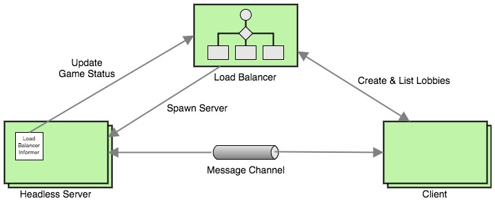

How we built a simple Game Lobby Manager using Go and Unity
Lobby managers are one of the most critical components of today’s online gaming infrastructure. In this post, I elaborate my experience of building a simple lobby manager using Golang and Unity.
Introduction
It’s 2017, and today’s Game Engines are highly sophisticated in terms of supporting network-integrated games. One of my favorite Game Engines is Unity 3D. Unity has a built-in HLAPI (High Level API) for building networked games, and this incredible API does all the heavy-lifting for the developer. Underlying this API is a brilliant architecture that leverages Distributed System algorithms, and that’s a field in Computer Science that I dearly love. I wanted to get under the hood, and it couldn’t have been better than learning from Dr. Mike Zyda, the scholar himself! Prof. Zyda teaches the Networked Games class at the University of Southern California, and that’s how I got this amazing opportunity to explore networking for games.
The Ooze Is Loose is what we, a team of 4, call our game. It’s primarily an FPS (First Person Shooter) game with a unique slime-monster theme (feel free to check out the trailer on our website). We, as a team, wanted to get into the very nitty-gritty of Unity’s networking, and therefore we custom-built the game’s networking architecture leveraging Unity’s LLAPI (Low Level API). It was also very exciting to see the game’s architecture take shape through the course of the semester. At one point, we also decided to build our own lobby manager, and in this post I’ll be describing exactly that.
The Architecture

The architecture has 4 main components, the functionality of which is described below.
- The Load Balancer is the primary component responsible for managing lobbies. The Load Balancer exposes a REST API which is consumed by the Client and the Headless Server.
- The Client here represents a single instance of the game.
- The Headless Server represents a single instance of the game that’s running in the headless mode on the server.
- The Load Balancer Informer is an inner component of the Headless Server, and its responsibility is to periodically communicate the game status to the Headless Server.
The Working
Joining a Lobby
When a user starts the game process (Client), it sends an HTTP GET /lobby request to Load Balancer. As a response, the Load Balancer returns it a list of lobbies, which it then renders on the screen for the user to choose from. The lobby data structure looks as follows:
// Lobby represents a lobby.
type Lobby struct {
// Name tells the lobby name.
Name string `json:"name"`
// MaxPlayers tells the maximum players that can join the lobby.
MaxPlayers int `json:"maxPlayers"`
// NumPlayers tells the number of players currently connected to the lobby.
NumPlayers int `json:"numPlayers"`
// Host tells the address of the server hosting the lobby.
Host string `json:"host"`
// Port tells the port on which the server is hosting the lobby.
Port int `json:"port"`
}
The response looks like the following:
[{
"name": "Epic Game",
"maxPlayers": 8,
"numPlayers": 0,
"host": "pylon1.usc.edu",
"port": 8888
}]
Each lobby is a separate (Headless Server) process on the server, which means that it has its own port. The example above shows a lobby named Epic Game which supports 8 playes at the peak and currently has no players. It is deployed on pylon1.usc.edu and is listening to packets on UDP port 8888. Once a user chooses to join a lobby, the Client makes a NetworkTransport.Connect(..) call to initiate the message flow between the Headless Server and the Client.
Creating a Lobby
But, how does one create a lobby? It’s as simple as sending an HTTP POST /lobby request with the lobby name to the Load Balancer, and magically a new lobby is made available within a few milliseconds.
Well, how does that happen? When the Load Balancer receives a POST request, it begins a scan to identify the next unused port (using a logic similar to the Linux FDT) and spawns a Headless Server process while supplying it an argument like -port=8889. The Headless Server process then starts accepting messages on the specified port.
The process spawning code looks similar to this:
cmd := exec.Command("TOIL.x86_64", "-batchmode", "-nographics", "-port="+portStr)
err := cmd.Start()
Shutting Down a Lobby
Shutting down a lobby is a non-trivial process. The reason is that the Load Balancer must be well aware of the number of players currently in the lobby, and it should reap a Headless Server instance only when it’s sure that no more players are in the game. This may sound trivial, but notice that initially there are 0 players in the game, and, in that case, the Load Balancer must be smart enough to not reap the Headless Server.
To solve the lobby shutdown problem, we put together the following algorithm. The algorithm primarily relies on the Load Balancer Informer for status updates.
- The Load Balancer Informer periodically sends an HTTP
PUT /lobbyrequest along with information about the Headless Server’sportand number of players connected to it. - The Load Balancer updates its in-memory lobby cache with the information it receives from the Load Balancer Informer.
- A
reapergoroutine periodically checks this cache and identifies processes that are ready to be reaped. - The reaper goroutine then sends a
SIGKILLsignal and safely terminates the Headless Server process.
Very briefly, the reaping logic looks like the following.
if lobby.NumPlayers == 0 && lobby.HadSomePlayers {
err := syscall.Kill(lobby.Pid, syscall.SIGKILL)
// error handling and logging
}
As you can see, the Load Balancer also tracks whether the lobby ever had any players i.e. it would consider reaping a process only if the lobby had at least a single player at some point. This algorithm is not completely fool-proof as there can be lobbies that lie unused endlessly, if no one every joins them. I’ve described such concerns/improvements in the next section.
Future Work
This simple lobby manager worked, as one could say, simply! There are some (or may be many) improvements that would be needed in order to make this robust. Here are 3 things that I think are the most important to make our lobby manager robust and scalable.
- Lobbies should be reaped even if no one ever joins them. This could be easily done by setting a pre-determined timeout for the Client to join after creating a lobby.
- The Load Balancer REST API is currently open i.e. has no authentication/authorization built around, and that is really a must have.
- The Load Balancer currently runs as a single process, and therefore is prone to SPoFs (Single Point of Failures). It would be great if we could scale the Load Balancer horizontally. That way, we should also be able to spawn Headless Server processes in a cluster of nodes, each running an instance of the Load Balancer.
Screencast
Here’s a screencast where I’m narrating the Load Balancer’s working along with a live demonstration.
Well, I hope that this article was informative, a little at least.. I’m just beginning to write :) If you like this project, please give it a star on GitHub. You can also leave your thoughts below. Thanks!